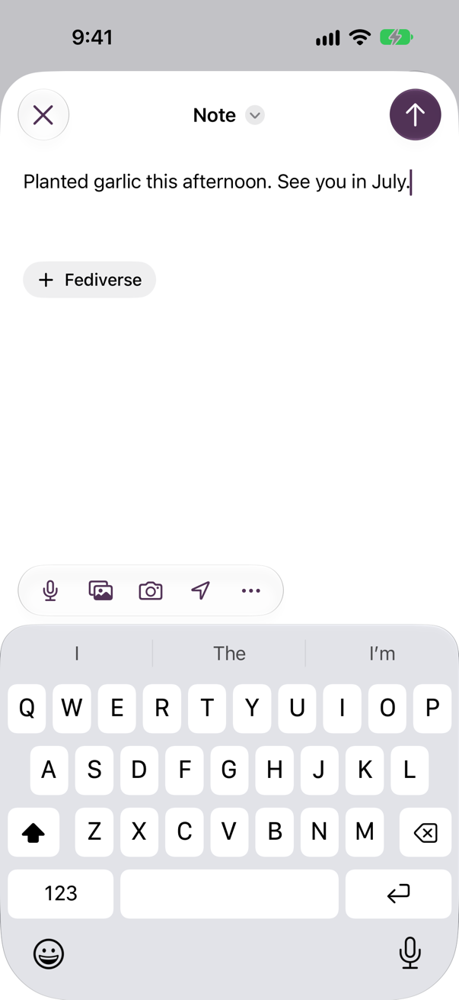
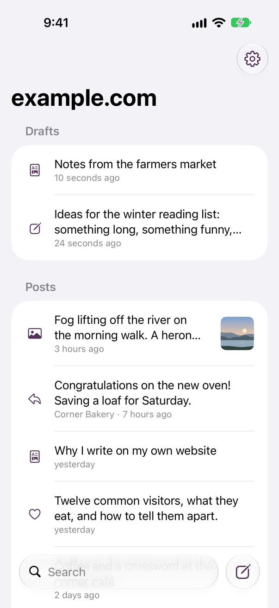
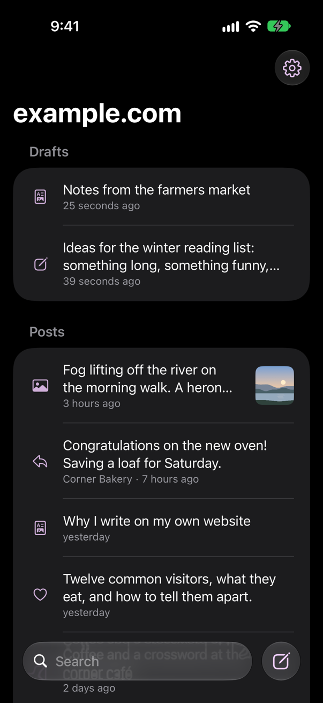
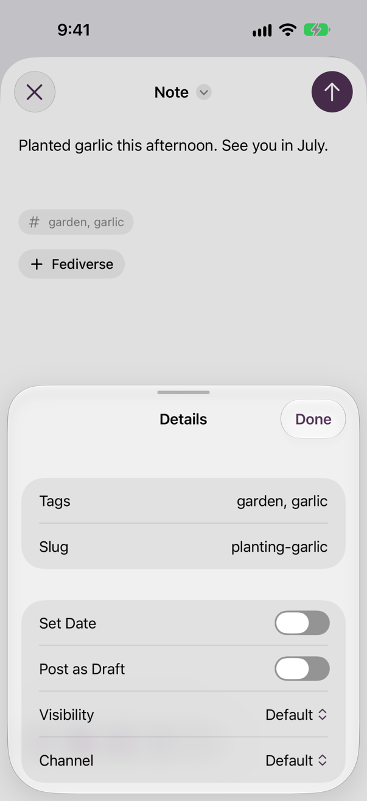
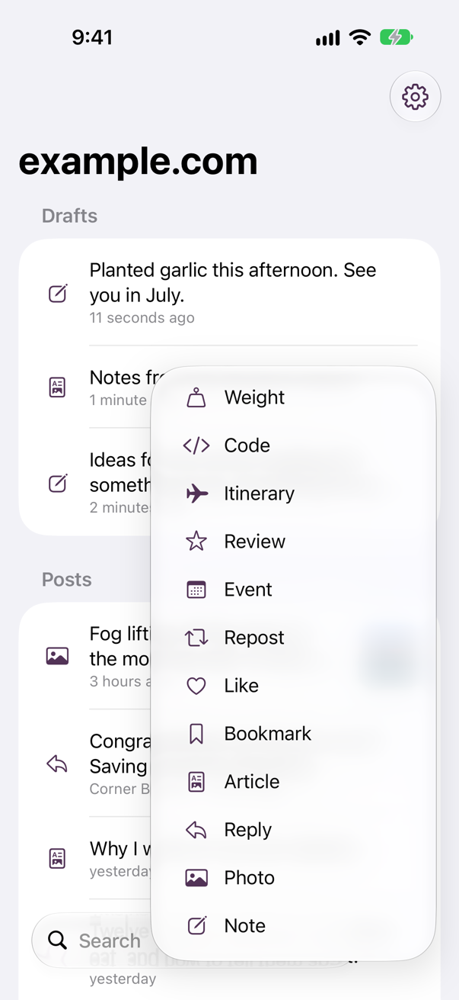
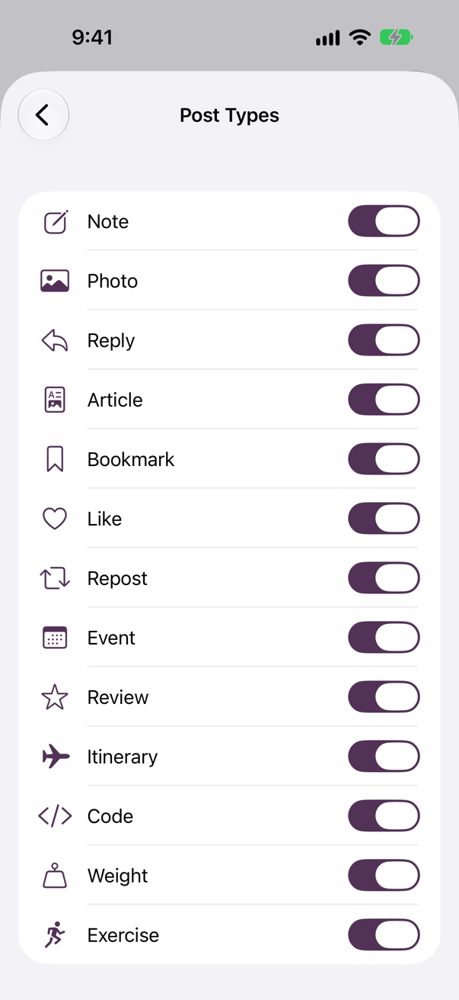
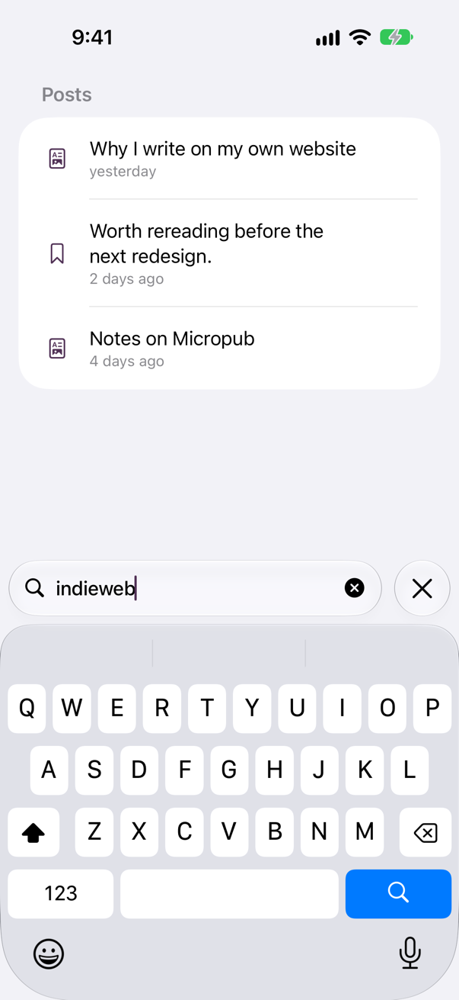
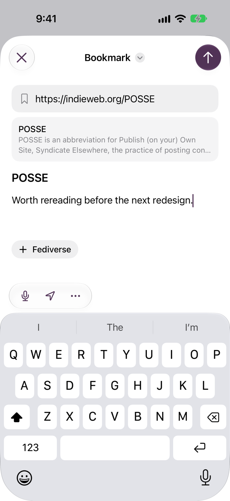
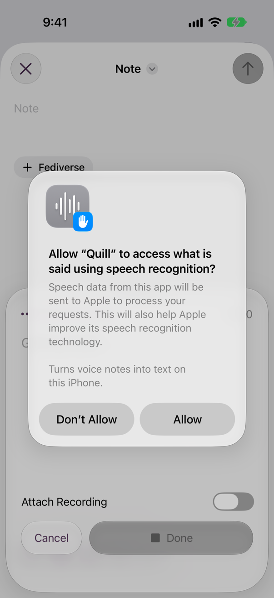
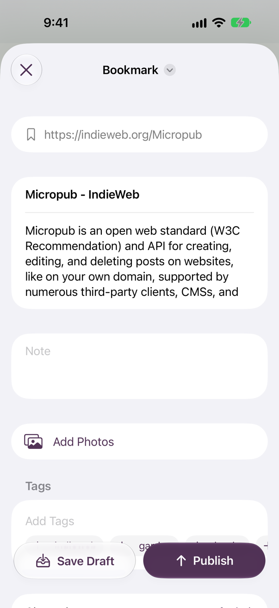

Post to your
own website.
A Micropub client for iPhone and iPad. Write a note, save a link, record a thought, and it lands on your site.
Free and open source. iOS 17 or later.



Works with any site that speaks Micropub: WordPress, Micro.blog, Known, Indiekit and many more.
Writing
Opens ready to write.
Tap the button and the keyboard is already up. Close the post and it waits as a draft. There is no Save button, because you never need one.
- Photos with alt text, location and tags from the bar above the keyboard
- Slug, date, visibility and syndication in Details
- Plain text, Markdown or HTML, per post

Post types
Every kind of post.
Notes and articles, and everything else the IndieWeb publishes. Change the type from the post’s title. Hide the ones you don’t use.


Your library
Your whole site, in your pocket.
Turn on sync and Quill keeps a copy of everything you’ve published, so search works offline and old posts are a tap away. Edit or delete them, and updates send only what changed.
- Likes, replies and bookmarks show what you were pointing at
- Pull to refresh fetches only what’s new
- Off by default. Turning it off clears the copy.


Voice notes
Say it. Post it.
Record a thought and watch it turn into text as you speak. Transcription runs on the device, and the words are yours to edit before they go anywhere. Attach the recording too, if you like.

Share sheet
Post from any app.
Share a page from Safari, a photo from Photos or a passage from a book. The full editor opens right there, so you can add a thought and post, or keep it as a draft for later.

And the rest
Small things, done properly.
Sign in with your domain
Type your site’s address. Quill finds its endpoints and signs in through IndieAuth.
Syndication
Pick the places your site cross-posts to, per post.
See the exact request
Details shows the Micropub request before it’s sent. Handy when you’re building your own server.
Shortcuts
New Note, New Bookmark and Open Draft actions, plus links like quill-native://reply.
Location
Attach where you are with one tap. Tap again to take it off.
Markdown
Write in Markdown and send it as is, or as HTML. Set a default per post type.
iPhone and iPad
Built with standard controls, so it picks up Liquid Glass, Dynamic Type and dark mode.
Works offline
Drafts and their photos live on the device until you post them.
Between you and your site.
No account, no server in the middle, no analytics. Your sign-in token stays in the Keychain. Quill talks to your website and to the pages you ask it to preview, and nothing else.